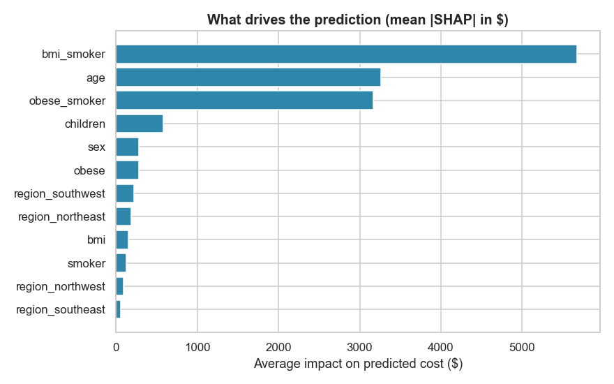
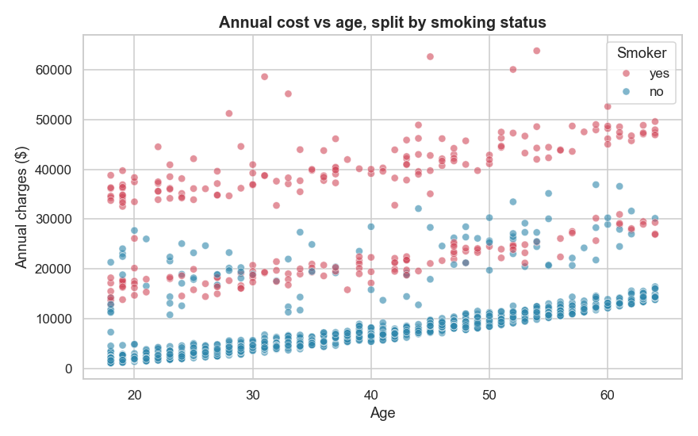
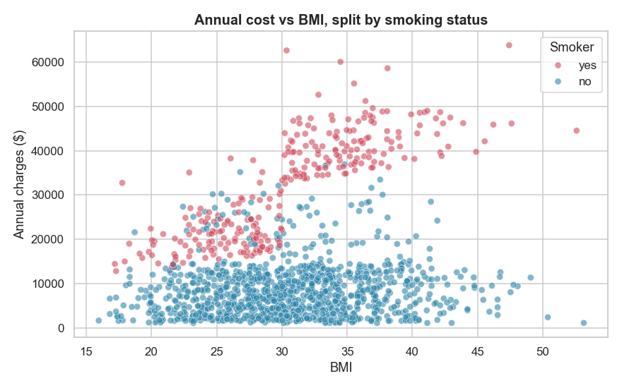

What Makes Medical Insurance Expensive?
What shapes an annual insurance bill, and why two customers can be priced so differently.
Introduction
Every premium has to balance two needs. It must cover the cost a customer is likely to incur, and it must be explainable when that customer, or a regulator, asks why the number is what it is. This project looks at both sides using a public dataset of medical charges, following the CRISP-DM process from business understanding through to a working model.
Problem Statement
Insurers need to price premiums that cover expected medical costs without overcharging customers. A price is only useful, though, if it can be justified to the person who pays it and to the regulator who reviews it. The goal is therefore twofold: predict annual cost accurately, and explain how every prediction was reached.
Solution
The work followed the CRISP-DM process, so every step had a purpose and fed the next. It began with the business question itself: an insurer needs a price that is both accurate and easy to justify. That goal shaped every choice that followed.
Next came the data. A public set of customer records covered age, sex, BMI, number of children, smoking status and region. Exploring it revealed the patterns that matter most, above all the way smoking and a high BMI combine to drive cost far higher than either does alone. Those findings guided how the data was cleaned and which features were built.
With the groundwork in place, a linear regression model was trained to predict the annual cost, and SHAP values were layered on top to explain each prediction. Linear regression was chosen on purpose: its logic can be read and defended, not hidden inside a black box.
The model was tested against a clear target (≥ 80%). On data it had never seen, it explained about 91% of the variation in cost, comfortably past the goal, and it edged out more complex models while staying far easier to read. The factors it leaned on also made business sense, with smoking, BMI and age pushing cost up exactly as expected, which confirmed the model was learning real patterns rather than noise.
Tech Stack
- Python
- scikit-learn
- statsmodels
- SHAP
- pandas
- Jupyter Notebook
- VS Code
Answering Business Questions with Data
1. Can annual cost be predicted accurately enough to set premiums?
Yes. A linear model that captures the right factors explains about 91% of the variation in annual cost,
with a typical error of roughly $4,100 per customer. That is accurate enough to support real pricing
decisions.
2. What drives medical cost the most?
Smoking, but rarely on its own. The combination of smoking and a high BMI outweighs every other factor,
followed by age. The chart below ranks how much each factor pushes a prediction up or down, in dollars.

3. How does cost change with age, and does smoking shift it?
Cost rises steadily with age for everyone, yet smokers sit on a far higher band at every age. A young
smoker can be charged more than an older non-smoker. Age matters, and smoking matters more.

4. Does BMI affect everyone equally?
No, and this was the most valuable insight. For non-smokers, BMI barely moves the bill. For smokers, a
higher BMI raises it sharply. Capturing that interaction is what lifted the model from 81% to 91% of the
variation explained.

5. Can a single customer's price be explained?
Yes. Shapley values break any individual estimate into the exact dollar contribution of each attribute,
so a specific price can be defended line by line to a customer or a regulator.
Conclusion
The simple, transparent model explained 91% of the variation in cost, while a more complex Random Forest explained 88%. In other words, R² of 0.91 means the model accounts for 91 percent of why bills differ from one customer to the next, and the linear model did this slightly better while staying easy to read. When a price has to be justified, a model you can explain is worth more than a black box that scores no higher.
Takeaway
This project pushed me into techniques that were new to me, the CRISP-DM framework and Shapley values among them. Writing the post itself for both technical and non-technical readers was its own lesson in storytelling and stakeholder communication. A few things I am keeping with me:
- CRISP-DM is a genuinely helpful structure for taking a machine learning project from start to finish.
- Shapley values are a powerful way to interpret a model, especially a simple one like regression.
- SHAP brings useful visualizations, such as the waterfall and beeswarm plots, that make both individual and overall explanations easy to read.
- A simple model is sometimes far better than a complex one, in accuracy and in clarity alike.
Source
Everything below lives in the public repository:
- medical-cost-prediction.ipynb the full CRISP-DM notebook, from EDA to the saved model.
- data/insurance.csv the dataset, 1,338 records.
- medical_cost_model.joblib the trained model, ready to reuse. It explains about 91% of the variation in annual cost (R² 0.91), with a typical error near $4,100.
- README.md the full technical details: methodology, results and how to run it.